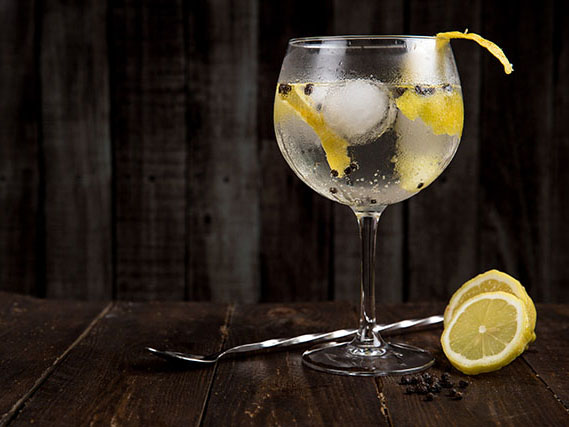

< Back
Citrus Gin Cocktail
This Tom Collins recipe makes the classic gin cocktail that was created in the late 1800s and is said to have been named after a widespread practical joke that swept the country. This cocktail, however, is no joke.

Prep Time: 5 mins
Total Time: 5 mins
Servings: 1
Ingredients
- 2 ½ cups ice, divided
- 2 fluid ounces gin
- ¾ fluid ounce lemon juice
- ½ fluid ounce simple syrup
- 2 fluid ounces club soda
- 1 lemon wedge
Directions
- Fill a Collins glass with 1 1/2 cups ice; set aside in the freezer.
- Combine gin, lemon juice, and simple syrup in a cocktail shaker. Add 1 cup ice, cover, and shake until chilled.
- Strain into the chilled Collins glass. Top with club soda and garnish with lemon wedge.